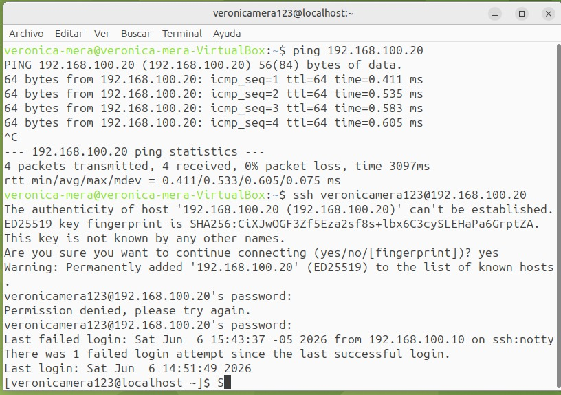
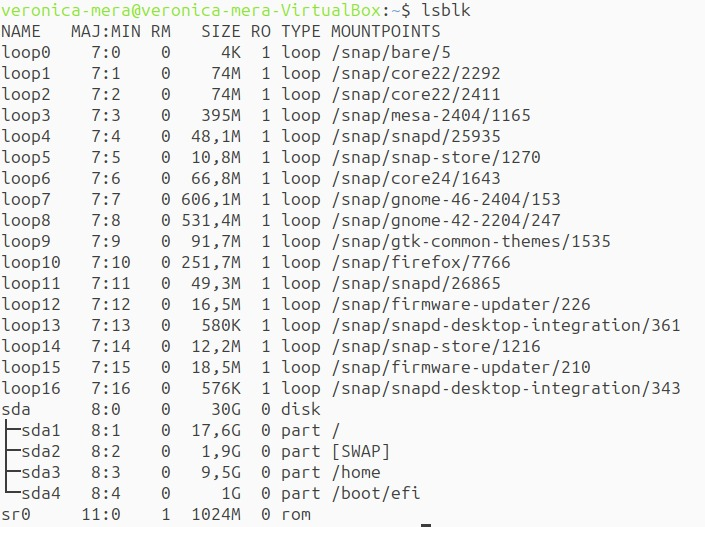
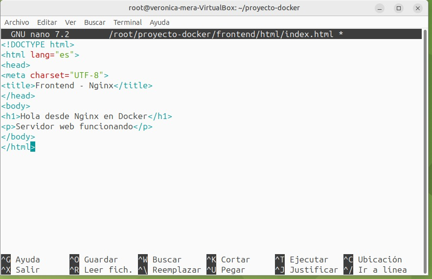
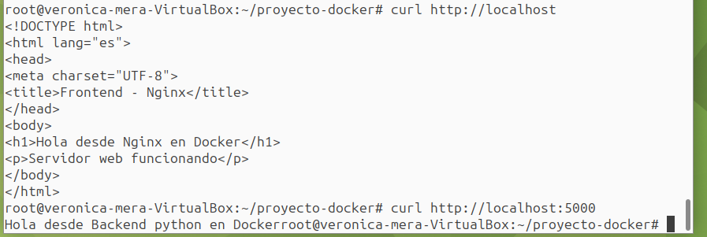
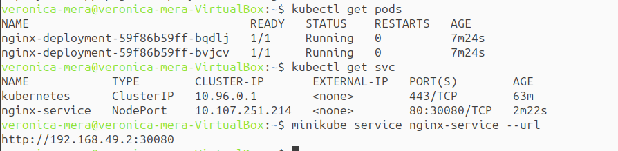
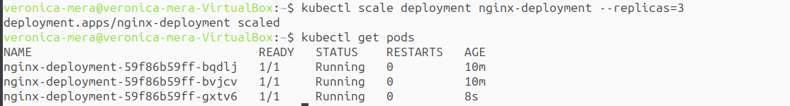

Componentes del Proyecto
Componente 1: Virtualización
Instalamos 2 VMs con VirtualBox: Ubuntu MATE 24.04 (gráfica) y Rocky Linux 9.4 (consola). Ambas con particionamiento manual (/, swap, /home) y comunicación SSH.


Componente 2: Docker
Implementamos frontend con Nginx y backend con Python usando Docker Compose, basados en la imagen rockylinux:9.


Componente 3: Kubernetes
Desplegamos Nginx con Minikube usando 2 réplicas iniciales, escalado a 3, con servicio tipo NodePort.

